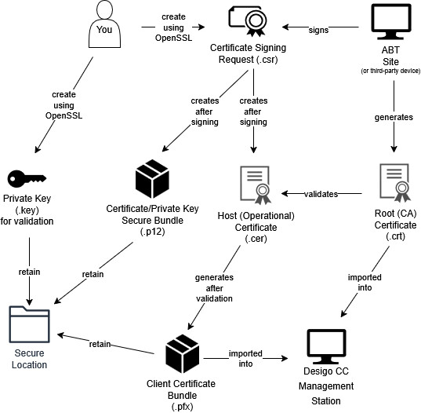
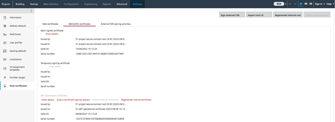
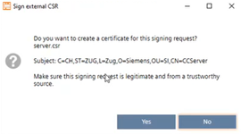
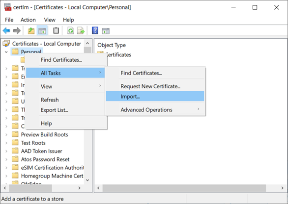

Creating and Importing Certificates for BACnet/SC
Complete the following procedures only if you want to configure the BT BACnet Stack using the BACnet Secure Connect (BACnet/SC) Protocol.
The certificate generation and signing process can be performed by a device with ABT Site installed, or a third-party device with certificate signing capabilities.
The guide below can also be found in the help for ABT Site. See the topic located at "ABT Site Components -> Building -> BACnet/SC -> Creating a BACnet/SC network topology with building- and floor hub -> 4. Signing ABT Site certificates for Desigo CC."
BACnet/SC uses certificates to encrypt your BACnet data during transmission over the network. Two certificates comprise the SC configuration. One is the Certificate Authority (CA or root) certificate that will be signed and provided to you from ABT or a third-party vendor. The other certificate is the host (operational) certificate for Desigo CC that is imported into Desigo and signed by the CA certificate. The host/operational certificate is needed to make Desigo CC a part of the encrypted BACnet/SC system.
An overview of the process:

Before beginning, you must locate a workstation on your network with Siemens ABT, or another device capable of generating certificates.
For Siemens Devices with ABT
ABT can either be installed on the computer running Desigo CC or another computer.
For Third-Party Devices
Different vendors will have their own procedures for creating and importing certificates if Desigo CC is going to connect to a vendor’s SC hub.
After you generate a signing request (.csr) file, your third party device should provide a signed host (operational) certificate and the root (CA) certificate.
ABT Site - Desigo CC Certificate Signing Workflow
1. Download Win64 OpenSSL
- Install the Win64 version of OpenSSL (3.0.15 or later) from this location+ https://openssl-library.org. Do not use the "light" installer: you should install the full version.
2. Generate the Certificate Signing Request (.csr) files
- On your management station, run the Command Prompt as an administrator. The instructions below will ask you to navigate to the Program Files directory where OpenSSL is installed. They also assume that all keys and certificates will be generated in this folder. If you want to generate and store your keys in another folder outside of the OpenSSL installation, you should keep in mind that all commands below will need to include the full path to the OpenSSL executable. For example, in the command prompt you would not type openssl req –new –newkey.... Instead, the command would be C:\Program Files\OpenSSL-win64\bin\openssl req –new –newkey...
- Navigate to the OpenSSL directory C:\Program Files\OpenSSL-Win64\bin
Enter the following command in the command prompt:
openssl req -new -newkey rsa:2048 -nodes -keyout server.key -out server.csr
You will be asked to fill out a number of fields attached to your certificate. These answers are for example purposes. Use details from your own organization.
Country: CH
State: Zug
Location: Zug
Organization: Siemens
Organization unit: SI
Common name: CCServer
Email: (empty)
Challenge password: Do not enter a challenge password.
Optional company name: (empty)
- You have created a server.csr and server.key files in the directory where you ran the command. You can sign the server file in ABT or provide it to a third party to sign.
Notice: Server.key file contains the private key, is security-critical, and needs to be kept private. It should never leave the computer where Desigo CC is running. Whoever has access to that key file can impersonate Desigo CC and compromise all BACnet/SC traffic! - Copy the server.csr to any location on the ABT Site computer (if it is not there already) to sign.

You may need multiple certificates. Some larger projects require one for each Desigo CC port. Practice clear naming conventions for your certificates so that later users can understand their scope. For example, Siemens_DesigoCC_[client_driver?_port?]
Refer to the chapter How many Desigo CC certificates are needed?
3. Export the Root Certificate from ABT Site
- Launch ABT Site.
- Go to Building.
- Open the Certificates management task.
Certificates management - Select the BACnet/SC tab.
- Click Export root certificate (/SC).
- Click OK.
- A [ABT_project_name_current_date].crt file is created.
- Copy the created *.crt file into the directory C:\CC_Cert.
Use ABT Site to Sign the Desigo CC Certificate Signing Request (CSR)
- In ABT Site, go to Settings.
- On the left sidebar, selectRoot certificates.
- Select the tab BACnet/SC certificates tab.
- Click the button Sign external CSR.

- Select the Desigo CC certificate signing request file server.csr and click Open.
- The Sign external CSR dialog box opens. The added file information from the OpenSSL step displays. You may receive a warning that some fields in your certificate are empty (for example, "Organization Name"). If this was your intention, you can proceed.

- Click Yes.
- The certificate requests from Desigo CC are now signed.
- A new server.p12 file is created in the folder C:\CC_Cert.
- A log entry is written in Settings > Root certificates > External CSR signing activities.
- Copy the files *.cet, *.cer, *.csr, *.p12 to the Desigo CC computer into the folder C:\program files\OpenSSL-win64\bin.
5. Validate the Host Certificate in Desigo CC
To validate the certificate on the Desigo CC computer and to create a server.pfx file, do the following:
- Go to the OpenSSL directory and enter the following command to generate a server.pfx file from the server.cer and server.key.
openssl pkcs12 -export -in server.cer -inkey server.key -out server.pfx - Click <Enter>.
- Enter a password.
Note: This password is used when the certificate on the Desigo CC computer is imported and when the driver port is created. - Verify the password.
- Click <Enter>.
- The server.pfx file is ready to use.
6. Import the BACnet/SC Root Certificate into the Desigo CC computer
- In Windows Search, enter Manage computer certificates (not manage user certificates), and run the application.
- The Microsoft Management Console Certificates dialog box displays.
- In the Certificates tree, right-click Trusted Root Certification Authorities, and select Action > All Tasks > Import.

- The Welcome to the Certificate Import Wizard dialog box displays.

- Click Next.
- The File to Import dialog box displays.
- Click Browse and select the root (CA) [ABT_project_name_current_date].crt certificate from ABT Site.
- Click Open, and then click Next.
- The Certificate Store dialog displays.

- Accept the default store location and click Next.
- Click Finish, and then click OK.
- The root certificate [ABT_project_name_current_date] is available in the folder Trusted Root Certification Authorities > Certificates.
7. Import the BACnet/SC Host Certificate into the Desigo CC Computer
- In Windows Search, enter Manage computer certificates (not manage user certificates), and run the application.
- The Microsoft Management Console Certificates dialog box displays.
- In the Certificates tree, right-click Personal, and select All Tasks > Import.

- The Welcome to the Certificate Import Wizard dialog box displays.
- Click Next.
- The File to Import dialog box displays.
- Click Browse and select a host certificate (file type server.pfx).

- Click Open, and then click Next.
- The Private key protection dialog displays.

- Do the following:
- Enter the password for this certificate.
- Select Mark this key as exportable, and then click Next.
Note: Do not enable strong private key protection. If your security policy automatically enables it, you must modify the Windows service that runs the Desigo CC services to run in a user account with administrative rights or privileges. - The Certificate Store dialog box displays.
- Accept the default store, and then click Next.
- The Completing the Certificate Import Wizard dialog box displays.
- Click Finish, and then click OK.
- The two certificates you imported are ready to be used when you configure the BT BACnet Stack.
- From the OpenSSL directory (or wherever your certificates and keys were generated), find and place the server.key,server.pfxand server.p12 files in a secure (authorized users only) location.